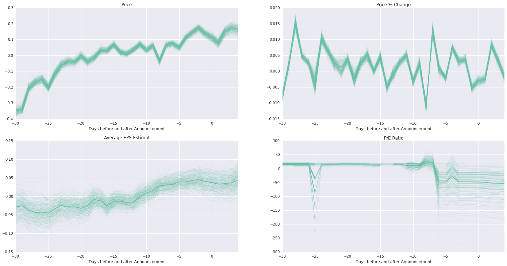

The Data
With over 20,000 stocks traded in North American financial markets alone, in order to narrow down our focus, we targeted S&P 500 companies. S&P 500 companies represent some of the largest publicly traded companies in the US, and they are listed on various stock exchanges including NYSE and NASDAQ. We limited our data to 10 years.
We found Wharton Research Data Services (WRDS) through Harvard Business School's Baker Library, which hosted a large array of financial data on the US and international companies around the world.
There are countless variables that impact stock price movements. We decided to focus our research on the following variables:
Price & Volume
Short Interest
Historical Financial Statements
Equity Analyst's EPS Estimates
Eliminating companies that did not have any one of the information above, we had total of
377 Companies
over 9 million rows and
over 4 gigabytes of data
Financial Statements Analysis
We gathered key financial statement items (i.e. Revenue, Operating Income, Net Income, EPS, Assets, Cash & Equivalent, and Equity) per each company every quarter up to 10 years.
Is there a relationship between Short Squeeze Incidents and Earnings Announcement Dates?
We felt that we can narrow down our observations to Short Squeeze incidents that happen on the day of or close to the day of the earnings announcements by the companies. Intuitively, when a company releases the quarterly financial statements sometimes they contain information that positively surprises (also, negatively) the market. For example, revenue might have increased by higher rate than historical trends or Earnings per Share (EPS) might have been significantly higher than estimates made by analysts in the market.
We could see that the Short Squeeze incidents were relatively normally distributed around the earninings announcement date, with clear exception of day zero - plus or minus approximately 4 days. Our intuition was likely correct in that these short squeeze opportunities happen as a result of new positive information released by the companies.
What factors in the Earnings (Financial Statements) Annoucements impact Short Squeeze Incidents?
Unfortunately, there was no visibly noticeable differences in financial results of those that resulted in Short Squeeze incident versus those that did not.
EPS Estimates & P/E Ratio
For each of the companies, we collected EPS estimates made by the sell-side analysts per each period. We calculated moving 1 month average of the EPS estimates by all of the analyst on a given date. Using the average EPS estimates, we also calculated P/E ratios - a popular valuation metrics - on a given date.

How do EPS estimates, prices, and valuation change as the financial results announcement date approach?
Interestingly, we find overall increase in share prices before the announcement date. In addition, we also find increase in Average EPS estimate. Even though we have not determined which variables are related to Short Squeeze events, we forge ahead to apply this data to machine learning algorithm.
Final Thoughts
While we can't claim to have found a method to perfectly predit Short Squeeze Events in the market (if so, we would be in position to make a lot of money!), we believe Structured Perceptron method is an interesting machine learning method for sequential data such as stock price movements.
We believe there is a lot of room for further exploration with the Structured Perceptron method.
iPython Notebook & Database
To replicate our results:
https://github.com/richardskim111/hunt-for-short-squeeze
Our database is stored in MongoDB:

https://drive.google.com/file/d/0B9WiV2o6eTMSMDlaV1JqNVJUUjA/view?usp=sharing
About Us
Richard Kim, CFA
Richard has worked as an investment banking analyst and an equity research analyst - focusing on Japanese financial markets for approximately 6 years prior to coming back to school. He is currently pursing ALM in Information Technology - Mathematics & Computations through the Harvard Extension School. Richard's research interests include machine learning and social computations as they relate to financial markets and natural languages.

Shumiao Ouyang
Shumiao Ouyang is a graduate student of Peking University - Guanghua School of Management pursing Masters in Finance. He has worked as a CFO of a start-up, Toyhouse (Tsinghua's Eduction Innovation Lab) and have participated in several academic research projects in economics and finance. He was awareded Exellent Student Awards of Peking University in 2014. Shumiao is interested in pursuing PhD in Economics.